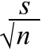

Examples
Use these examples to explain that when σ is unknown, it can be replaced by the sample standard deviation,
standard error = σerror = 
The estimated error distribution shows how far the sample mean is likely to be from µ.
For each of the examples, say that "we can be fairly sure that the error will be no more than xxx".
The contexts for the data are described in the diagrams.